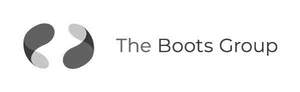

Trade Mark Journal No.2025/036 5 September 2025
UK00004256700 29 August 2025 (3,5,8,9,10,16,18,21,35,36,42,44)
Mark 1
Mark 2

- Class 3
- Adhesives for affixing false hair; adhesives for affixing false eyelashes; after-shave balms; after-shave creams; after-shave gel; after shave lotions; after-shave preparations; after sun creams; air fragrancing preparations; almond milk for cosmetic purposes; almond soaps; aloe vera preparations for cosmetic purposes; anti-aging creams; anti-wrinkle cream; aromatherapy creams; aromatic oils; aromatic oils for the bath; antiperspirants [toiletries]; artificial eyelashes; artificial fingernails; babies' creams [non-medicated]; baby bath mousse; baby body milks; baby bubble bath; baby care products (non-medicated -); baby lotions; baby oils; baby powders; baby shampoo mousse; baby suncreams; baby wipes impregnated with cleaning preparations; baby wipes; balms other than for medical purposes; bath and shower foam; bath and shower gels; bath creams; bath crystals; bath foam; bath gel; bath oils for cosmetic purposes; bath preparations, not for medical purposes; bath salts; bath soaps; beauty balm creams; beauty care preparations; beauty creams for body care; bleaching preparations [decolorants] for cosmetic purposes; body lotions; body mask cream; body mask lotion; body milk; body oils; body scrub; hair spray; breath freshener; refill packs for body cleansing product dispensers; refill packs for cosmetics dispensers; refill packs for hair fixer dispensers; refill packs for hand soap dispensers; cosmetics; toiletry preparations; cosmetic preparations for skin care; chewable tooth cleaning preparations; cleaning preparations for personal use; cocoa butter for cosmetic purposes; concealers for lines and wrinkles; cosmetic body scrubs; cosmetic breast firming preparations; cosmetic creams and lotions; cosmetic creams for dry skin; cosmetic creams for firming skin around eyes; cosmetic creams for the skin; cosmetic dyes; cosmetic eye pencils; cosmetic facial lotions; cosmetic facial masks; cosmetic foams containing sunscreens; cosmetic masks; cosmetic massage creams; cosmetic moisturisers; cosmetic preparations; cosmetic powder; cosmetic oils; cosmetic mud masks; cosmetic preparations for skin care; cosmetic skin enhancers; cosmetic skin fresheners; cosmetic soap; cosmetic white face powder; cosmetics containing hyaluronic acid; cosmetics for sun tanning; cosmetics for the use on the hair; cosmetics for the treatment of dry skin; cosmetics for use in the treatment of wrinkled skin; cosmetics for use on the skin; cotton buds for cosmetic purposes; cotton puffs for cosmetic purposes; cotton sticks for cosmetic purposes; cotton swabs for cosmetic purposes; cotton wool balls for cosmetic use; cream cleaners (non-medicated -); creams (non-medicated -) for the eyes; creams (non-medicated -) for the body; creams (skin whitening -); cuticle conditioners; cuticle cream; cuticle oils; cuticle removers; cuticle removing preparations; cuticle softeners; dandruff shampoo; day creams; decorative cosmetics; dental bleaching gel; dental polish; dental rinses for non-medical purposes; dentifrices; dentifrices and mouthwashes; deodorants for human beings or for animals; deodorant soap; depilatory creams; depilatory lotions; depilatory preparations; depilatory wax; detanglers; dry shampoos; dyes for the hair; eau de cologne; emery cloth; emery paper; essential oils and aromatic extracts; eye concealers; eye cosmetics; eye cream; eye creams; eye make-up removers; eye pencils; eye shadow; eyebrow cosmetics; eyebrow mascara; eyebrow pencils; eyebrow powder; eyeliner; eyeliner pencils; face cream (non-medicated -); face creams for cosmetic use; face powder (non-medicated -); face scrubs (non-medicated -); facial creams [cosmetics]; facial lotions; facial makeup; facial oils; facial scrubs; facial lotions [cosmetic]; facial scrubs [cosmetic]; facial toners [cosmetic]; facial washes [cosmetic]; foot balms (non-medicated -); foot deodorant spray; foundation make-up; foundations; fragrances; gel eye patches for cosmetic purposes; gels for cosmetic use; gels for fixing hair; hair balms; hair bleaching preparations; hair care creams; hair care creams [for cosmetic use]; hair care lotions; hair care preparations, not for medical purposes; hair care serum; hair colouring preparations; hair conditioner; hair cosmetics; hair curling preparations; hair decolorants; hair lacquer; hair mascara; hair lotions; hair liquids; hair moisturisers; hair moisturising conditioners; hair mousses; hair oils; hair preparations and treatments; hair sprays; hair straightening preparations; hair shampoos; hair-waving preparations; hand cleaning preparations; hand cleansers; hand scrubs; hydrogen peroxide for cosmetic purposes; impregnated cleaning pads impregnated with cosmetics; japanese hair fixing oil (bintsuke-abura); lacquer for cosmetic purposes; laundry preparations; leather and shoe cleaning and polishing preparations; lip protectors (non-medicated -); lip protectors [cosmetic]; lipsticks; liquid foundation; liquid foundation (mizu-oshiroi); liquid perfumes; liquid soap used in foot baths; make-up; lotions for cellulite reduction; lotions for cosmetic purposes; lotions for strengthening the nails; make-up foundation; make-up pencils; make-up powder; make-up preparations; make-up primers; make-up removing preparations; mascaras; massage oils; massage gels, other than for medical purposes; moisturisers; mouthwash; multifunctional cosmetics; moustache wax; nail polish removers [cosmetics]; nail tips [cosmetics]; nails (false -); nappy cream [non-medicated]; natural cosmetics; natural essential oils; night creams; oral hygiene preparations; perfumed lotions [toilet preparations]; perfumed creams; perfumed powder; perfumed soap; perfumery; polishing creams; polishing preparations; preparations for cleaning dentures; preparations for cleaning the teeth; pumice stone; acne cleansers, cosmetic; adhesives for affixing false nails; refill packs for shampoo dispensers; shampoo; shave creams; shave balm; shaving creams; shaving foams; shaving gels; shaving mousse; shaving oils; shaving sprays; shower gels; shower preparations; skin balms [cosmetic]; skin balms (non-medicated -); skin cream; skincare preparations; slimming aids [cosmetic], other than for medical use; slimming purposes (cosmetic preparations for -); soap; sun blocking preparations [cosmetics]; sun care lotions [for cosmetic use]; sun creams [for cosmetic use]; sun-tanning creams and lotions; sun-tanning preparations; tailors' and cobblers' wax; talc; talc [toiletries]; teeth whitening strips impregnated with teeth whitening preparations [cosmetics]; tissues impregnated with cosmetics; toilet preparations; tooth paste; tooth powders; washing preparations for personal use; wave-set lotions; wax (cobblers' -); wax (depilatory -); wax (polishing -); wax treatments for the hair; wrinkle removing skin care preparations; wrinkle resistant cream; wrinkle resistant creams; wrinkle resistant creams [for cosmetic use]; tooth care preparations.
- Class 5
- Pharmaceutical preparations; veterinary preparations; sanitary preparations for personal hygiene, other than toiletries; chewing gum for medical purposes; medical plasters; medical dressings; medicated dentifrices; medicated soap; medicated shampoos; medicated toilet preparations; medicated hair lotions; medical preparation for slimming purposes; medical diagnostic test strips; sodium salts for medical purposes; medical dressings, coverings and applicators; medical adhesives for binding wounds; dietetic substances for medical use; vitamins; mineral water salts; mineral food supplements; medicines for dental purposes; preparations for the diagnosis of pregnancy; medicines; nail care preparations for medical use; foot care preparations for medical use; pharmaceutical preparations for skin care; dietetic food and substances adapted for medical or veterinary use; food for babies; dietary supplements for humans and animals; plasters, materials for dressings; material for stopping teeth, dental wax; disinfectants; preparations for destroying vermin; fungicides; herbicides; acne treatment preparations; antibacterial soap; antibacterial handwashes; sanitary napkins; remedies for foot perspiration; tissues impregnated with pharmaceutical lotions; contraceptive preparations; sanitary towels; sanitary tampons; petroleum jelly for medical purposes; disinfectants; medical and surgical plasters; surgical dressings.
- Class 8
- Hand tools and implements for personal and cosmetic grooming; razors; disposable razors; eyelash curlers; tweezers; hair-removing tweezers; nail clippers; nail nippers; nail files; nail buffers, electric or non-electric; cuticle scrapers; cuticle clippers; eyelash curlers; emery boards; manicure sets; scissors; razors, electric or non-electric; razor blades; manicure sets; pedicure sets; hand implements for hair curling; depilation appliances, electric and non-electric.
- Class 9
- Computer software, recorded; computer software for managing integrated digital databases in the field of healthcare; computer software applications, downloadable; computer hardware; stock and inventory control apparatus (electric and electronic); data processing apparatus; electronic apparatus relating to the monitoring of stock; electronic publications, downloadable; electronic tags for goods; battery chargers; computer software used to manage and organize patient healthcare information; computer software used to monitor and display data; software used to plan, manage, and coordinate care for patients; computer software for use in the healthcare services; baby scales; baby monitors; magnetic and encoded cards; cases for smartphones; loyalty cards; membership cards; software relating to the organisation, operation and supervision of loyalty schemes; photographic instruments and apparatus; audio and video instruments and apparatus; eyewear; sunglasses; spectacles; spectacle lenses; spectacle frames; spectacle cases; reading glasses; contact lenses; contact lens cases; anti-glare glasses; smartglasses; optical apparatus and instruments; cameras; digital cameras; shutters [photography]; stands for photographic apparatus; bags for cameras; light filters for cameras; lens filters [for cameras]; zoom lenses for cameras; memory cards for cameras; projectors; photographic instruments; photographic cameras; photographic view finders; digital photo frames; headphones; lifesaving apparatus and equipment; pedometers; respirators for filtering air; respiratory masks, other than for artificial respiration; safety restraints, other than for vehicle seats and sports equipment; scales; sound recording apparatus; USB flash drives; information technology and audio-visual, multimedia and photographic devices; sound and/or video reproducing apparatus; cameras; camcorders; electric batteries; radios; electric plugs, sockets, adaptors and contacts; wearable activity trackers; weighing machines.
- Class 10
- Surgical apparatus and instruments; medical apparatus and instruments; dental apparatus and instruments; artificial limbs, eyes and teeth; orthopedic articles; suture materials; babies´bottles; pacifiers for babies; teething rings; apparatus for acne treatment; aerosol dispensers for medical purposes; apparatus for artificial respiration; baby feeding dummies; bandages for joints, anatomical; bandages, elastic; belts for medical purposes; blood testing apparatus; body rehabilitation apparatus for medical purposes; body fat monitors; breast pumps; brushes for cleaning body cavities; cases fitted for medical instruments; cholesterol meters; condoms; contraceptives, non-chemical; dental apparatus and instruments; ear plugs; ear picks; feeding bottle valves; gloves for medical purposes; hearing aids; hypodermic syringes; incontinence sheets; knee bandages, orthopaedic; nasal aspirators; needles for medical purposes; pads for preventing pressure sores on patient bodies; sex toys; syringes for injections; temperature indicator labels for medical purposes; thermometers for medical purposes; toe separators for orthopaedic purposes; tongue scrapers; walking sticks for medical purposes.
- Class 16
- Paper and cardboard; printed matter; printed publications; catalogues; printed coupons; books; magazines [periodicals]; photographs; stationery; paper flags; instructional and teaching materials; newsletters; calendars; address stamps; albums; tissues of paper for removing make-up.
- Class 18
- Leather and imitations of leather; animal skins and hides; luggage and carrying bags; umbrellas and parasols; walking sticks; whips, harness and saddlery; airline travel bags; baby backpacks; baby carriers [slings or harnesses]; backpacks; bags; bags for travel; beauty cases; briefcases; cabin bags; cosmetic bags; cosmetic bags sold empty; fanny packs; frames for umbrellas; handbags; gentlemen's handbags; leather bags; leather purses; leather wallets; luggage, bags, wallets and other carriers; make-up bags; make-up boxes; make-up cases; pouches; purses; small purses; small rucksacks; suitcases; toiletry bags; tote bags; travel bags; trunks; vanity cases, not fitted; vanity cases sold empty; wallets; key cases.
- Class 21
- Cleaning instruments, hand-operated; combs; electric combs; cosmetic utensils; cotton waste for cleaning; drinking vessels; eyebrow brushes; eyelashe brushes; foam toe separators for use in pedicures; gloves for household purposes; inflatable bath tubs for babies; holders for shaving brushes; holders for toilet paper; lip brushes; loofahs; make-up brushes; shaving brushes; shaving brush stands; shoe horns; make-up removing appliances; make-up sponges; make-up brushes; nail brushes; powder puffs; non-electric make-up removing appliances; perfume bottles; perfume sprayers; perfume vaporizers; plastic bottles; powder puffs; sandwich boxes; shampoo dispensers; shampoo holders; shampoo racks; shaving bowls; shower gel dispensers; soap boxes; sponges; sprayers for cleaning gums and teeth; squeegees [hand-operated] for cleaning; squeeze bottle [empty]; tissue box covers; toilet brushes; toilet cases; toilet brush sets; toilet sponges; toiletry cases; toilet utensils; tooth brush cases; towel rails; water bottles for bicycles, sold empty; teapots; toothbrushes; toothbrushes electric.
- Class 35
- Advertising; organization, operation and supervision of loyalty programmes and of sales and promotional incentive schemes; organization of competitions for advertising or business purposes; promotional services; business consultancy; business information; management of computer databases; compilation of information onto computer databases; advisory and consultancy services relating to database management and marketing; business data analysis; business research and analysis; retail services and online retail services in connection with the sale of adhesives for affixing false hair, adhesives for affixing false eyelashes, after-shave balms, after-shave creams, after-shave gel, after shave lotions, after-shave preparations, after sun creams, air fragrancing preparations, almond milk for cosmetic purposes, almond soaps, aloe vera preparations for cosmetic purposes, anti-aging creams, anti-wrinkle cream, aromatherapy creams, aromatic oils, aromatic oils for the bath, antiperspirants [toiletries], artificial eyelashes, artificial fingernails, babies' creams [non-medicated], baby bath mousse, baby body milks, baby bubble bath, baby care products (non-medicated -), baby lotions, baby oils, baby powders, baby shampoo mousse, baby suncreams, baby wipes impregnated with cleaning preparations, baby wipes, balms other than for medical purposes, bath and shower foam, bath and shower gels, bath creams, bath crystals, bath foam, bath gel, bath oils for cosmetic purposes, bath preparations, not for medical purposes, bath salts, bath soaps, beauty balm creams, beauty care preparations, beauty creams for body care, bleaching preparations [decolorants] for cosmetic purposes, body lotions, body mask cream, body mask lotion, body milk, body oils, body scrub, hair spray, breath freshener, refill packs for body cleansing product dispensers, refill packs for cosmetics dispensers, refill packs for hair fixer dispensers, refill packs for hand soap dispensers, cosmetics, toiletry preparations, cosmetic preparations for skin care, chewable tooth cleaning preparations, cleaning preparations for personal use, cocoa butter for cosmetic purposes, concealers for lines and wrinkles, cosmetic body scrubs, cosmetic breast firming preparations, cosmetic creams and lotions, cosmetic creams for dry skin, cosmetic creams for firming skin around eyes, cosmetic creams for the skin, cosmetic dyes, cosmetic eye pencils, cosmetic facial lotions, cosmetic facial masks, cosmetic foams containing sunscreens, cosmetic masks, cosmetic massage creams, cosmetic moisturisers, cosmetic preparations, cosmetic powder, cosmetic oils, cosmetic mud masks, cosmetic preparations for skin care, cosmetic skin enhancers, cosmetic skin fresheners, cosmetic soap, cosmetic white face powder, cosmetics containing hyaluronic acid, cosmetics for sun tanning, cosmetics for the use on the hair, cosmetics for the treatment of dry skin, cosmetics for use in the treatment of wrinkled skin, cosmetics for use on the skin, cotton buds for cosmetic purposes, cotton puffs for cosmetic purposes, cotton sticks for cosmetic purposes, cotton swabs for cosmetic purposes, cotton wool balls for cosmetic use, cream cleaners (non-medicated -), creams (non-medicated -) for the eyes, creams (non-medicated -) for the body, creams (skin whitening -), cuticle conditioners, cuticle cream, cuticle oils, cuticle removers, cuticle removing preparations, cuticle softeners, dandruff shampoo, day creams, decorative cosmetics, dental bleaching gel, dental polish, dental rinses for non-medical purposes, dentifrices, dentifrices and mouthwashes, deodorants for human beings or for animals, deodorant soap, depilatory creams, depilatory lotions, depilatory preparations, depilatory wax, detanglers, dry shampoos, dyes for the hair, eau de cologne, emery cloth, emery paper, essential oils and aromatic extracts, eye concealers, eye cosmetics, eye cream, eye creams, eye make-up removers, eye pencils, eye shadow, eyebrow cosmetics, eyebrow mascara, eyebrow pencils, eyebrow powder, eyeliner, eyeliner pencils, face cream (non-medicated -), face creams for cosmetic use, face powder (non-medicated -), face scrubs (non-medicated -), facial creams [cosmetics], facial lotions, facial makeup, facial oils, facial scrubs, facial lotions [cosmetic], facial scrubs [cosmetic], facial toners [cosmetic], facial washes [cosmetic], foot balms (non-medicated -), foot deodorant spray, foundation make-up, foundations, fragrances, gel eye patches for cosmetic purposes, gels for cosmetic use, gels for fixing hair, hair balms, hair bleaching preparations, hair care creams, hair care creams [for cosmetic use], hair care lotions, hair care preparations, not for medical purposes, hair care serum, hair colouring preparations, hair conditioner, hair cosmetics, hair curling preparations, hair decolorants, hair lacquer, hair mascara, hair lotions, hair liquids, hair moisturisers, hair moisturising conditioners, hair mousses, hair oils, hair preparations and treatments, hair sprays, hair straightening preparations, hair shampoos, hair-waving preparations, hand cleaning preparations, hand cleansers, hand scrubs, hydrogen peroxide for cosmetic purposes, impregnated cleaning pads impregnated with cosmetics, japanese hair fixing oil (bintsuke-abura), lacquer for cosmetic purposes, laundry preparations, leather and shoe cleaning and polishing preparations, lip protectors (non-medicated -), lip protectors [cosmetic], lipsticks, liquid foundation, liquid foundation (mizu-oshiroi), liquid perfumes, liquid soap used in foot baths, make-up, lotions for cellulite reduction, lotions for cosmetic purposes, lotions for strengthening the nails, make-up foundation, make-up pencils, make-up powder, make-up preparations, make-up primers, make-up removing preparations, mascaras, massage oils, massage gels, other than for medical purposes, moisturisers, mouthwash, multifunctional cosmetics, moustache wax, nail polish removers [cosmetics], nail tips [cosmetics], nails (false -), nappy cream [non-medicated], natural cosmetics, natural essential oils, night creams, oral hygiene preparations, perfumed lotions [toilet preparations], perfumed creams, perfumed powder, perfumed soap, perfumery, polishing creams, polishing preparations, preparations for cleaning dentures, preparations for cleaning the teeth, pumice stone, acne cleansers, cosmetic, adhesives for affixing false nails, refill packs for shampoo dispensers, shampoo, shave creams, shave balm, shaving creams, shaving foams, shaving gels, shaving mousse, shaving oils, shaving sprays, shower gels, shower preparations, skin balms [cosmetic], skin balms (non-medicated -), skin cream, skincare preparations, slimming aids [cosmetic], other than for medical use, slimming purposes (cosmetic preparations for -), soap, sun blocking preparations [cosmetics], sun care lotions [for cosmetic use], sun creams [for cosmetic use], sun-tanning creams and lotions, sun-tanning preparations, tailors' and cobblers' wax, talc, talc [toiletries], teeth whitening strips impregnated with teeth whitening preparations [cosmetics], tissues impregnated with cosmetics, toilet preparations, tooth paste, tooth powders, washing preparations for personal use, wave-set lotions, wax (cobblers' -), wax (depilatory -), wax (polishing -), wax treatments for the hair, wrinkle removing skin care preparations, wrinkle resistant cream, wrinkle resistant creams, wrinkle resistant creams [for cosmetic use], tooth care preparations, pharmaceutical preparations, veterinary preparations, sanitary preparations for personal hygiene, other than toiletries, chewing gum for medical purposes, medical plasters, medical dressings, medicated dentifrices, medicated soap, medicated shampoos, medicated toilet preparations, medicated hair lotions, medical preparation for slimming purposes, medical diagnostic test strips, sodium salts for medical purposes, medical dressings, coverings and applicators, medical adhesives for binding wounds, dietetic substances for medical use, vitamins, mineral water salts, mineral food supplements, medicines for dental purposes, preparations for the diagnosis of pregnancy, medicines, nail care preparations for medical use, foot care preparations for medical use, pharmaceutical preparations for skin care, dietetic food and substances adapted for medical or veterinary use, food for babies, dietary supplements for humans and animals, plasters, materials for dressings, material for stopping teeth, dental wax, disinfectants, preparations for destroying vermin, fungicides, herbicides, acne treatment preparations, antibacterial soap, antibacterial handwashes, sanitary napkins, remedies for foot perspiration, tissues impregnated with pharmaceutical lotions, contraceptive preparations, sanitary towels, sanitary tampons, petroleum jelly for medical purposes, disinfectants, medical and surgical plasters, surgical dressings, hand tools and implements for personal and cosmetic grooming, razors, disposable razors, eyelash curlers, tweezers, hair-removing tweezers, nail clippers, nail nippers, nail files, nail buffers, electric or non-electric, cuticle scrapers, cuticle clippers, eyelash curlers, emery boards, manicure sets, scissors, razors, electric or non-electric, razor blades, manicure sets, pedicure sets, hand implements for hair curling, depilation appliances, electric and non-electric, computer software, recorded, computer software for managing integrated digital databases in the field of healthcare, computer software applications, downloadable, computer hardware, stock and inventory control apparatus (electric and electronic), data processing apparatus, electronic apparatus relating to the monitoring of stock, electronic publications, downloadable, electronic tags for goods, battery chargers, computer software used to manage and organize patient healthcare information, computer software used to monitor and display data, software used to plan, manage, and coordinate care for patients, computer software for use in the healthcare services, baby scales, baby monitors, magnetic and encoded cards, cases for smartphones, loyalty cards, membership cards, software relating to the organisation, operation and supervision of loyalty schemes, photographic instruments and apparatus, audio and video instruments and apparatus, eyewear, sunglasses, spectacles, spectacle lenses, spectacle frames, spectacle cases, reading glasses, contact lenses, contact lens cases, anti-glare glasses, smartglasses, optical apparatus and instruments, cameras, digital cameras, shutters [photography], stands for photographic apparatus, bags for cameras, light filters for cameras, lens filters [for cameras], zoom lenses for cameras, memory cards for cameras, projectors, photographic instruments, photographic cameras, photographic view finders, digital photo frames, headphones, lifesaving apparatus and equipment, pedometers, respirators for filtering air, respiratory masks, other than for artificial respiration, safety restraints, other than for vehicle seats and sports equipment, scales, sound recording apparatus, USB flash drives, information technology and audio-visual, multimedia and photographic devices, sound and/or video reproducing apparatus, cameras, camcorders, electric batteries, portable electric apparatus and instruments, radios, electric plugs, sockets, adaptors and contacts, wearable activity trackers, weighing machines, surgical apparatus and instruments, medical apparatus and instruments, dental apparatus and instruments, artificial limbs, eyes and teeth, orthopedic articles, suture materials, babies´bottles, pacifiers for babies, teething rings, apparatus for acne treatment, aerosol dispensers for medical purposes, apparatus for artificial respiration, baby feeding dummies, bandages for joints, anatomical, bandages, elastic, belts for medical purposes, blood testing apparatus, body rehabilitation apparatus for medical purposes, body fat monitors, breast pumps, brushes for cleaning body cavities, cases fitted for medical instruments, cholesterol meters, condoms, contraceptives, non-chemical, dental apparatus and instruments, ear plugs, ear picks, feeding bottle valves, gloves for medical purposes, hearing aids, hypodermic syringes, incontinence sheets, knee bandages, orthopaedic, nasal aspirators, needles for medical purposes, pads for preventing pressure sores on patient bodies, sex toys, syringes for injections, temperature indicator labels for medical purposes, thermometers for medical purposes, toe separators for orthopaedic purposes, tongue scrapers, walking sticks for medical purposes, paper and cardboard, printed matter, printed publications, catalogues, printed coupons, books, magazines [periodicals], photographs, stationery, paper flags, instructional and teaching materials, newsletters, calendars, address stamps, albums, tissues of paper for removing make-up, leather and imitations of leather, animal skins and hides, luggage and carrying bags, umbrellas and parasols, walking sticks, whips, harness and saddlery, airline travel bags, baby backpacks, baby carriers [slings or harnesses], backpacks, bags, bags for travel, beauty cases, briefcases, cabin bags, cosmetic bags, cosmetic bags sold empty, fanny packs, frames for umbrellas, handbags, gentlemen's handbags, leather bags, leather purses, leather wallets, luggage, bags, wallets and other carriers, make-up bags, make-up boxes, make-up cases, pouches, purses, small purses, small rucksacks, suitcases, toiletry bags, tote bags, travel bags, trunks, vanity cases, not fitted, vanity cases sold empty, wallets, key cases, cleaning instruments, hand-operated, combs, electric combs, cosmetic utensils, cotton waste for cleaning, drinking vessels, eyebrow brushes, eyelashe brushes, foam toe separators for use in pedicures, gloves for household purposes, inflatable bath tubs for babies, holders for shaving brushes, holders for toilet paper, lip brushes, loofahs, make-up brushes, shaving brushes, shaving brush stands, shoe horns, make-up removing appliances, make-up sponges, make-up brushes, nail brushes, powder puffs, non-electric make-up removing appliances, perfume bottles, perfume sprayers, perfume vaporizers, plastic bottles, powder puffs, sandwich boxes, shampoo dispensers, shampoo holders, shampoo racks, shaving bowls, shower gel dispensers, soap boxes, sponges, sprayers for cleaning gums and teeth, squeegees [hand-operated] for cleaning, squeeze bottle [empty], tissue box covers, toilet brushes, toilet cases, toilet brush sets, toilet sponges, toiletry cases, toilet utensils, tooth brush cases, towel rails, water bottles for bicycles, sold empty, teapots, toothbrushes, toothbrushes electric.
- Class 36
- Financial services relating to loyalty schemes; issue and redemption of vouchers, tokens, tickets and cheques of value in relation to loyalty schemes; payment card services; credit, debit and loyalty card services; information, advisory and consultancy services relating to all of the aforesaid services.
- Class 42
- Providing multi-channel, omni-channel and cross-channel e-commerce platforms including for use via smartphones, tablets, and online; programming of software for multi-channel, omni-channel and cross-channel e-commerce platforms; research and consultancy relating to the aforesaid services.
- Class 44
- Provision of hygienic, cosmetic and beauty care services; beauty consultation services; information, assistance and advisory services relating to beauty, health, beauty care and cosmetics; advisory services relating to pharmacy; pharmacy services; pharmacy advisory services; medical information services; dispensing of pharmaceuticals; preparation and dispensing of medications; advisory services relating to pharmaceuticals; provision of information relating to medicine; pharmacists' services to make up prescriptions; providing information in the fields of medical care, patient care, caregiver support and medical goods and services; on-line information services relating to healthcare; Advisory services relating to health, beauty and hygiene; services relating to the dispensing of pharmaceuticals.
The Boots Company PLC
Representative: The Boots Company PLC